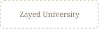
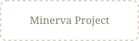
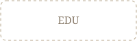
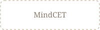
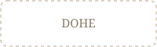
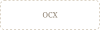

Architecture for learning
From knowing
to doing.
People go through learning all the time. The hard part is making it show up where it counts, in what they can actually do. Most programs get built one piece at a time, the pieces never connect, and no one can show anything changed. That's the part we design for.
Book a Learning Architecture Conversation →The problem isn't the teaching, delivery or content. It's that the pieces don't connect.
Organizations and institutions spend enormous resources on learning that never shows up where it counts. People go through the program, understand the idea, and then very little changes in what they can actually do.
It's rarely a content problem. Learning gets built one piece at a time, by different people, for different reasons, and the pieces don't line up. What someone learns on Monday isn't reinforced by their manager, their tools, their other courses, or the way the work is structured, so it fades. And almost no one can show, with evidence, that any of it changed what people can do.
So it's really two problems: the pieces don't connect, and no one can prove they worked. Most teams treat both as something to sort out after the learning is already built.
What is learning architecture
Learning architecture is the deliberate design of how learning is structured and connected in context, so the pieces build on each other, line up with real goals, and show up in what people can actually do. It starts from a different question. Not "what should people know?" but "what do we need people to be able to do, and what has to be true for that to happen?"
That means designing across the things a single course can't control: whether people are motivated, what the people and systems around them reward or push back on, whether the work or the curriculum leaves room for the new way of doing things, and what gets measured, since what isn't measured rarely gets defended. It also means knowing where the old habits are anchored, and what it takes to shift them.
Get those right and the learning has somewhere to land, and you can show it landed. It's closer to strategy and systems design than to building a course, and the goal was never a better course anyway. It's a real, visible change in what people can do.
Three kinds of people keep finding their way here.
Corporate L&D
Heads of learning and capability who want a seat at the strategic table are tired of reporting completions that prove nothing. The pressure now is to show that training moves performance, and the business numbers tied to it. We connect what people learn to the capabilities the work actually demands, so it shows up on the job, in retention, leadership and productivity, not just the completion report.
EdTech Founders & Investors
Founders and the investors behind them, facing buyers who now want efficacy, not just screenshots of engagement. Your dashboard may show usage, and that's a good first step; it doesn't prove learning happened. We build the layer that links what learners do to outcomes for users and customers you can measure and defend at renewal. This evidence turns adoption into proof the product works, at scale.
Universities & Education leaders
Provosts, deans, and faculty for whom keeping students now matters as much as recruiting them. Students disengage when a degree feels like a pile of disconnected credits with no through-line and no hopes of future application. We help design the coherence that links courses and experiences into real outcomes, the kind that support persistence, completion, and a degree that demonstrably leads somewhere - growth for the student and success for the institution.
Three ways in, depending on how far you want to go.
Most people start small. The first conversation costs nothing and is useful on its own.
Architecture Scan
A focused read on where your learning breaks down, where it gets built but never shows up in what people can do. You'll come away knowing what that's costing you, whether or not we work together afterward.
Architecture Sprint
A focused redesign of one program or course. We rebuild it so the pieces connect and the results are something you can run, measure, and defend.
Architecture Partnership
A deeper engagement to rebuild how learning works across the board: the design, the structure that connects it, and the evidence that proves it worked.
Partnered with these people to advance learning






Let's talk about what your learning is meant to do.
Book a Learning Architecture Conversation: a short, no-pitch call to find where your learning stops short of changing what people can do, and whether there's a fit.
Prefer email? Learning@sharptext.org